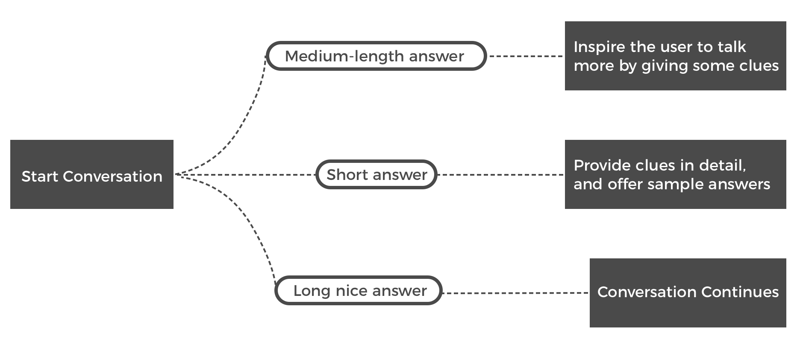

Understand language learners and VUI users
We did literature reviews to find out the barriers in VUI and general characteristics of smart speaker users.
Survey was conducted to learn the difficulties in language learning.
Then we interviewed both groups to understand the reasons behind findings emerged from quantitative research.
Affinity wall of interview notes:
Lastly, to check on unfulfilled needs, we did competitive analysis on:
• Language learning tools, combined with comments we gathered from survey data
• Learning strategies that our target user created themselves when they learn or practice speaking.

“I learn the language to use it, to talk with people”
Speaking feature is generally neglected in most language learning softwares. The existing ones focus on pronunciations, asking users to follow the example then repeat the sentence.
No dialogue was involved in
speaking practice.
“I remember them after I actually used them”
“Sometimes I wrote lines from movies, because I like them, and I think I may use them in a conversation some day”
To help user improve speaking, it is important to not only let them practice, but also provide resources for them to enrich their expressions in scenarios.
Voice assistant is a suitable tool for language learner’s needs:
“I don’t feel it is easy to ask people to just practice speaking, because everyone has their own busy work to deal with”
1. Practice conversations that are useful in real-life scenarios.
2. Expand vocabulary and phrases in oral language.
1. People expect smart speakers are more intelligent than they are.
2. Note taking is a common approach in language learning, but unavailable in VUI.
3. Recollection is a pain in language learning.
With the research results, we created user persona to guide us through the design process.
A Peek at Chattie

“I am most motivated to learn phrases that are often used in real life, the useful language”
We selected topics that are
frequently used in popular language learning materials, incorporated related interesting phrases into conversation design.
In user test, we found users like
relevant answers to themselves, because they can borrow sentences for their own use. Accordingly, we increase the variety of sample answers under each topic.
To come up with captivating conversation, we had many rounds of speed tests with people. We iterate our design to encourage users speak more, and continue the conversation in a natural flow.
Pains in Language Learning
We designed different levels of clues based on user’s proficiency

We observed language learners often times couldn’t repeat a new word they hear, thus failing to remember or inquiry more information of the word.
"Say it again"
Therefore, in the conversation, we enable Chattie to repeat questions in response to “say it again”, and offer explanation of new vocabulary when users stumbles.
According to affinity analysis we made, recollection is a common pain in language learning.
We designed a notebook for users to collect words or voice clips. Chattie also suggests to add into a wordlist whenever there is a question.
In The World of Voice UX
We followed voice UX design guidelines to avoid common usability issues.
Cathy Pearl’s book and
AnswerLab’s VUI research helped us the most.
We adopted their advice in language learning features.
Learnt VUI user’s difficulty in discovering features. we give a glimpse of the features in the beginning, and guide users for following steps when the feature is needed.
When asked about Chattie’s personality, our users all hoped it to be friendly. In multiple rounds of test, we found adding ad-libs gives Chattie a welcoming personality.